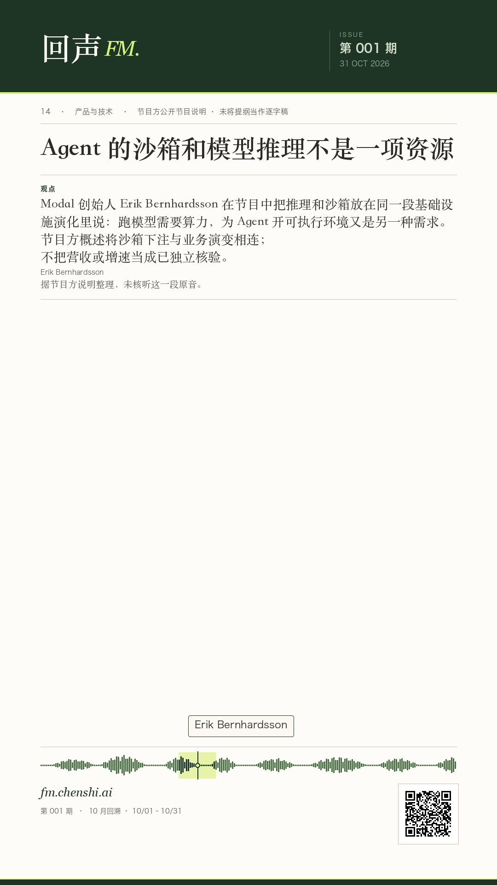

14第 001 期产品与技术10.28节目方公开节目说明 · 未将提纲当作逐字稿
Agent 的沙箱和模型推理不是一项资源
观点
Modal 创始人 Erik Bernhardsson 在节目中把推理和沙箱放在同一段基础设施演化里说：跑模型需要算力，为 Agent 开可执行环境又是另一种需求。节目方概述将沙箱下注与业务演变相连；不把营收或增速当成已独立核验。
据节目方说明整理，未核听这一段原音。
节目溯源
Unsupervised Learning with Jacob Effron
本期
第 001 期 · 31 OCT 2026 · 10 月回溯 · 10/01–10/31
